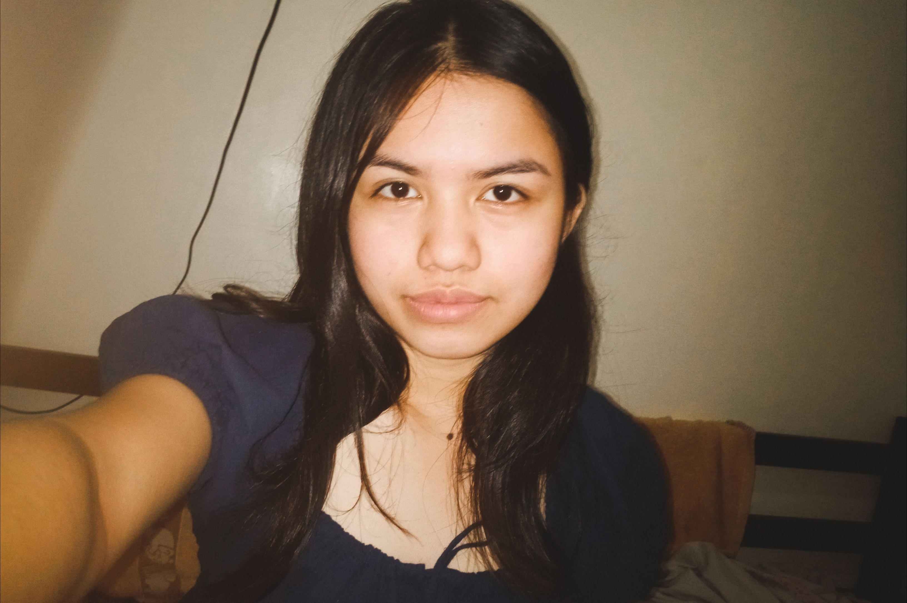
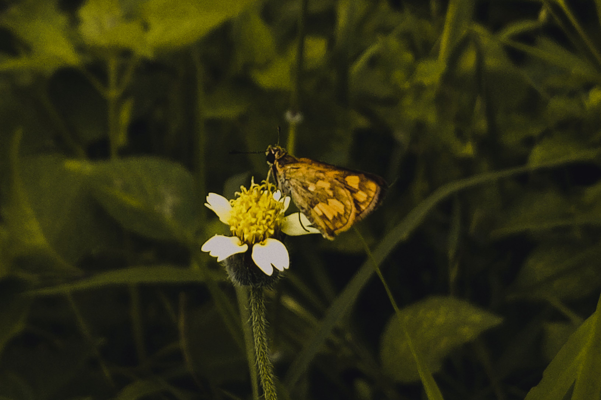
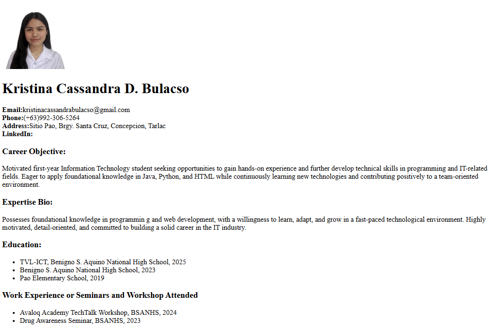
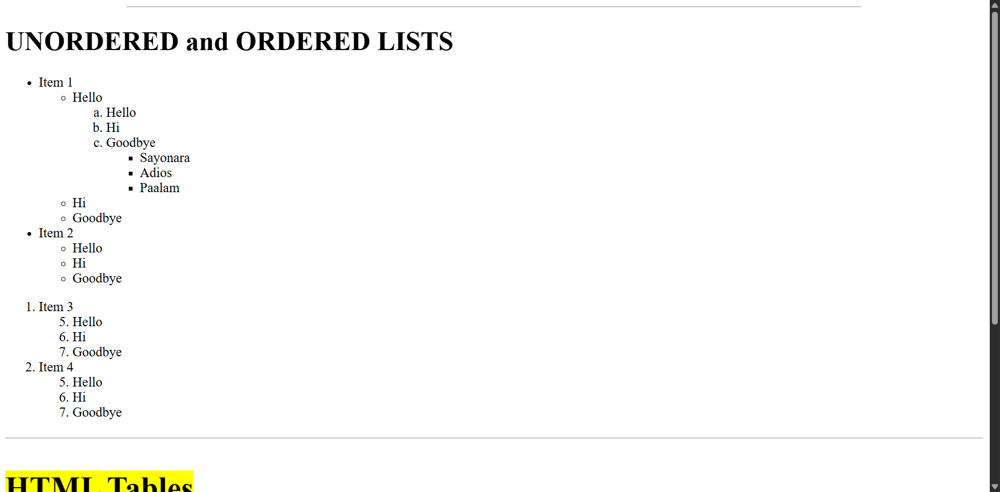
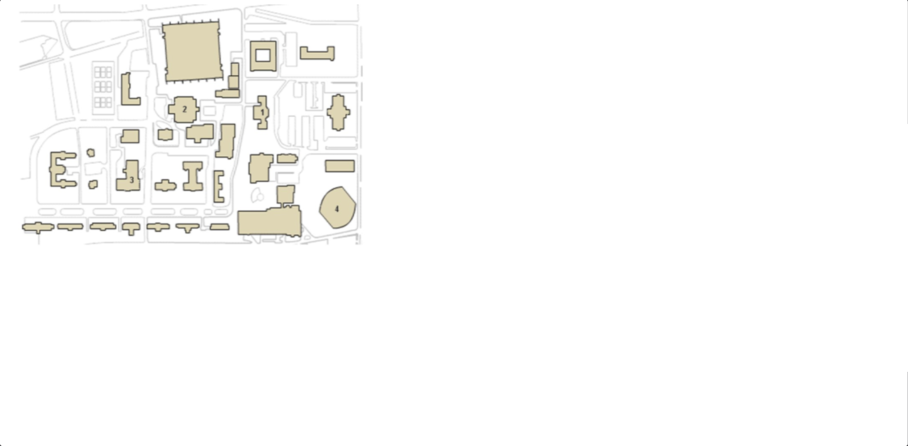
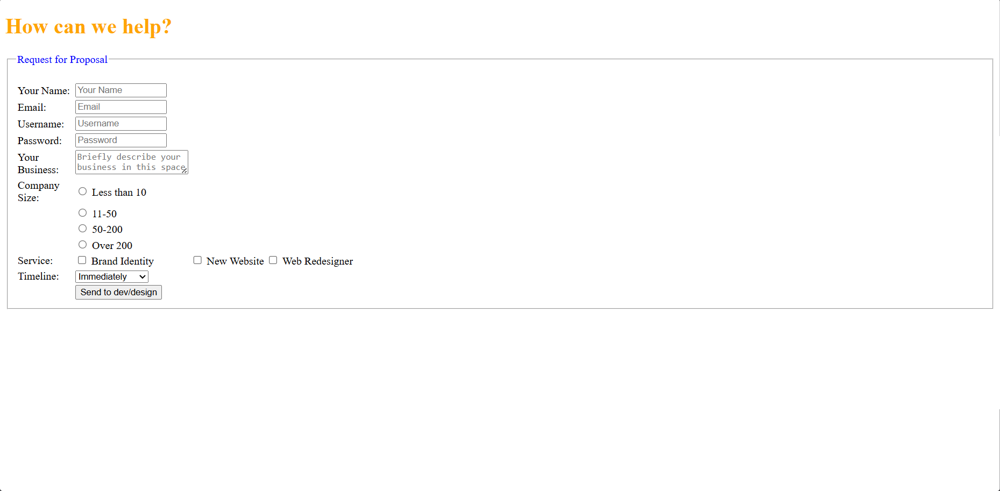
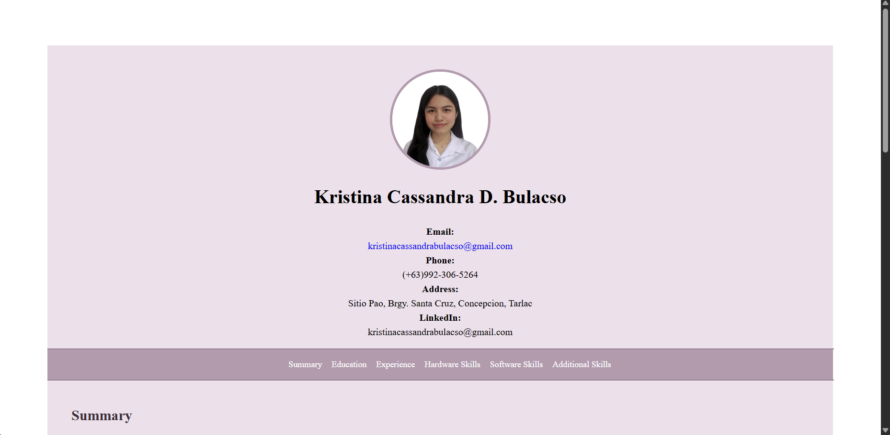
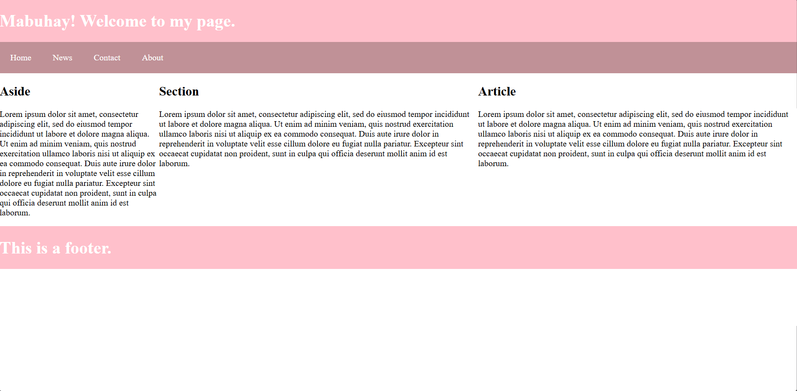

|
|---|
|
 |
 "All our dreams can come true if we have the courage to pursue them." -Walt Disney |
Age 18 Aug 30, 2007 |
Nationality Filipino |
||
|
⠀⠀⠀⠀⠀⠀⢀⡤⣤⣀⠀⠀⠀⠀⠀⠀⠀⠀⠀⠀⣀⡀⠀⠀⠀⠀⠀⠀ ⠀⠀⠀⠀⠀⢀⡏⠀⠀⠈⠳⣄⠀⠀⠀⠀⠀⣀⠴⠋⠉⠉⡆⠀⠀⠀⠀⠀ ⠀⠀⠀⠀⠀⢸⠀⠀⠀⠀⠀⠈⠉⠉⠙⠓⠚⠁⠀⠀⠀⠀⣿⠀⠀⠀⠀⠀⠀⠀⠀ ⠀⠀⠀⠀⡞⠀⠀⠀⠀⠀⠶⠀⠀⠀⠀⠀⠀⠦⠀⠀⠀⠀⠀⠸⡆⠀⠀⠀ ⢠⣤⣶⣾⣧⣤⣤⣀⡀⠀⠀⠀⠀⠈⠀⠀⠀⢀⡤⠴⠶⠤⢤⡀⣧⣀⣀⠀ ⠀⠀⠙⠤⠴⢤⡤⠤⠤⠋⠉⠉⠉⠉⠉⠉⠉⠳⠖⠦⠤⠶⠦⠞⠁⠀ |
|||||
 |
|
Wikipedia |
|
|
Hello! I’m Kristina Cassandra D. Bulacso, a first-year Information Technology student at Pampanga
State Agricultural University. This portfolio highlights my projects, experience, and skills, reflecting
my growth and dedication to this subject, WS101. It shows the projects I’ve worked on,
what I’ve learned along the way, and how I continue to grow in this field. |
|
|
|
Wikipedia |
|
|
-Pampanga State Agricultural University, Magalang Pampanga (2025-Current) |
About ₍^. .^₎Ⳋ
Hi there, I'm Kristina! I’m someone who enjoys anything relating to art, and I like creating things that are both meaningful and creative.
In my free time, I enjoy drawing, painting, and crocheting/sewing. I also have other interests such as watching movies, gaming, designing, etc., which helps me stay inspired and relaxed.
A few fun facts about me: I enjoy trying new things even if they’re a little outside my comfort zone, and I like adding small creative touches to whatever I do. I’m someone who values growth, creativity, and trying new things.
Born |
August 30, 2007 (age 18 years), Concepcion, Tarlac |
Full Name |
Kristina Cassandra Bulacso |
Education |
Pampanga State Agricultural University, 2025 - Current |
Hobbies |
Drawing, Painting, Crocheting, Sewing, Playing games |
Contact Me . ₊˚ ☎︎₊˚✧
 |
 |
 |
 |
Lab Task 1: Resume |
| Creating a resume. | |
 |
Lab Task 2: Nested List |
| Arranging lists. | |
 |
Lab Task 3: Image Maps |
| Making images Interactable. | |
 |
Lab Task 4: HTML Forms |
| UI Design. | |
 |
Lab Task 5: Applying CSS |
| Applying CSS to a resume. | |
 |
Lab Task 6: Using CSS Display |
| Using the display property. | |
 |
Lab Task 7: Semantics |
| Using semantic elements. | |